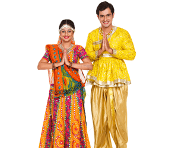

Traditional attire in Gujarat is vibrant and diverse, reflecting the rich cultural heritage of the state. For men, the traditional dress typically includes a Dhoti and Kurta, often accompanied by a Phento (a type of turban)On festive occasions, men may be seen wearing a Kediyu, a frock-style kurta with frills, along with Chorno, a type of cotton pants resembling a stitched dhotiWomen traditionally wear sarees or Chaniya Choli, a traditional attire comprising a flared skirt, blouse, and a dupatta. However, in urban areas, women have also started wearing Salwar Kameez .The attire is often adorned with vibrant colors, intricate embroidery, mirror work, and various accessories, reflecting the cultural richness of Gujarat
